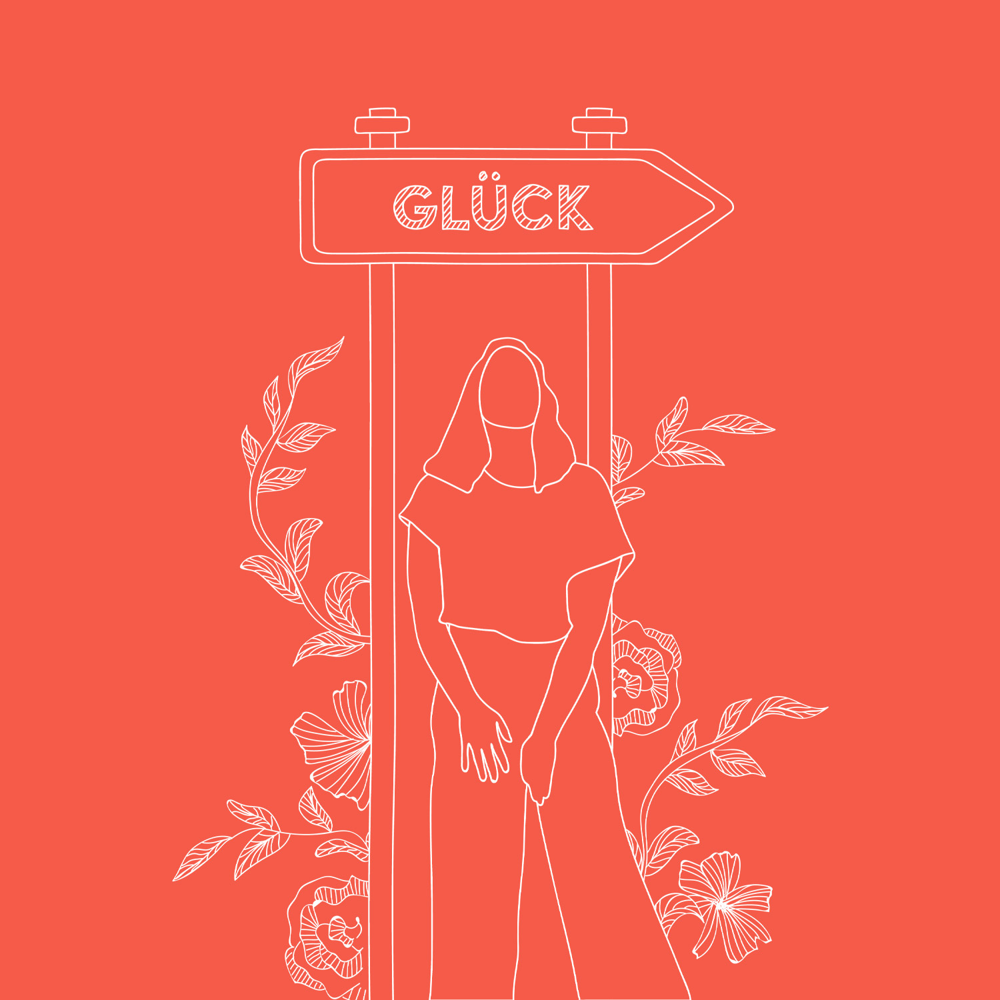
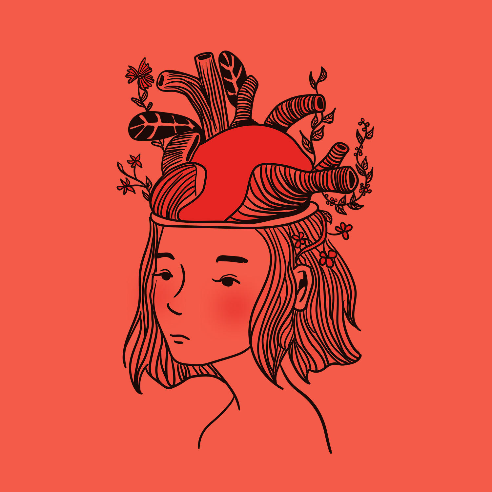
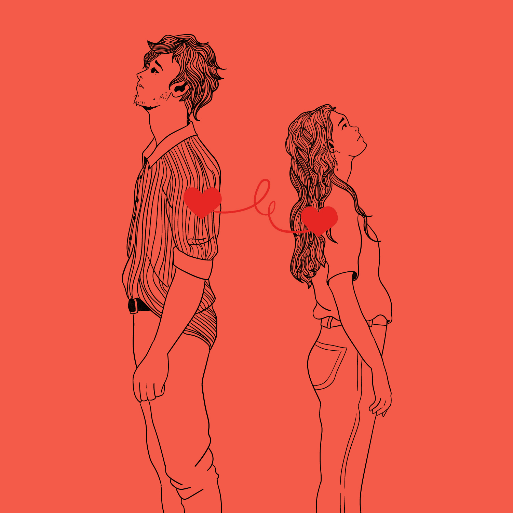
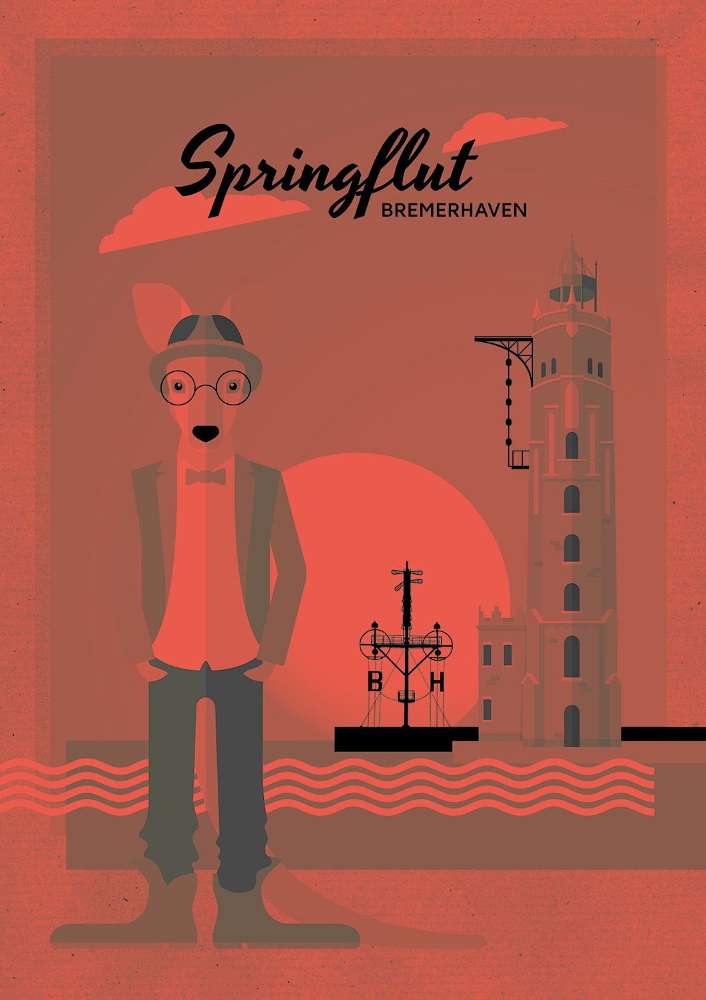
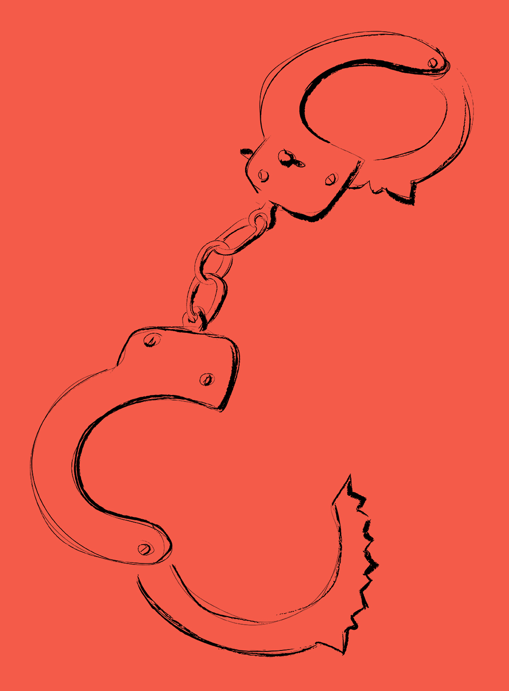
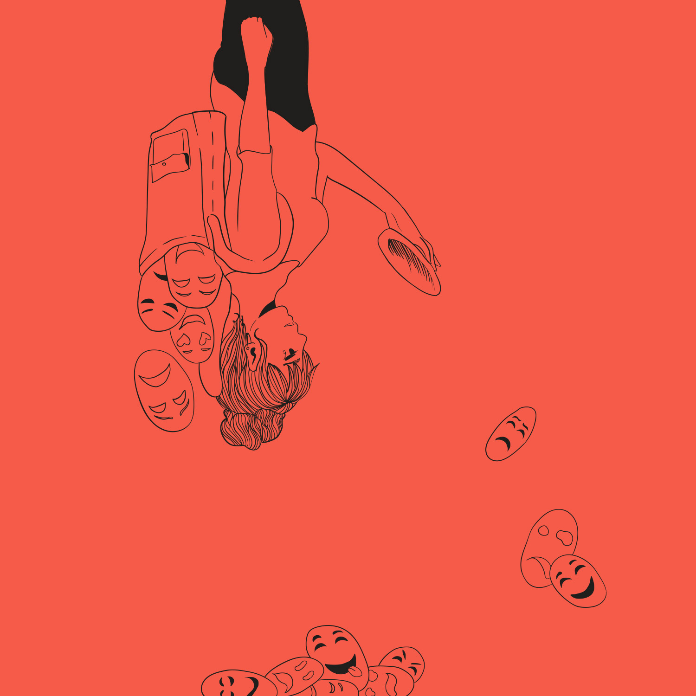
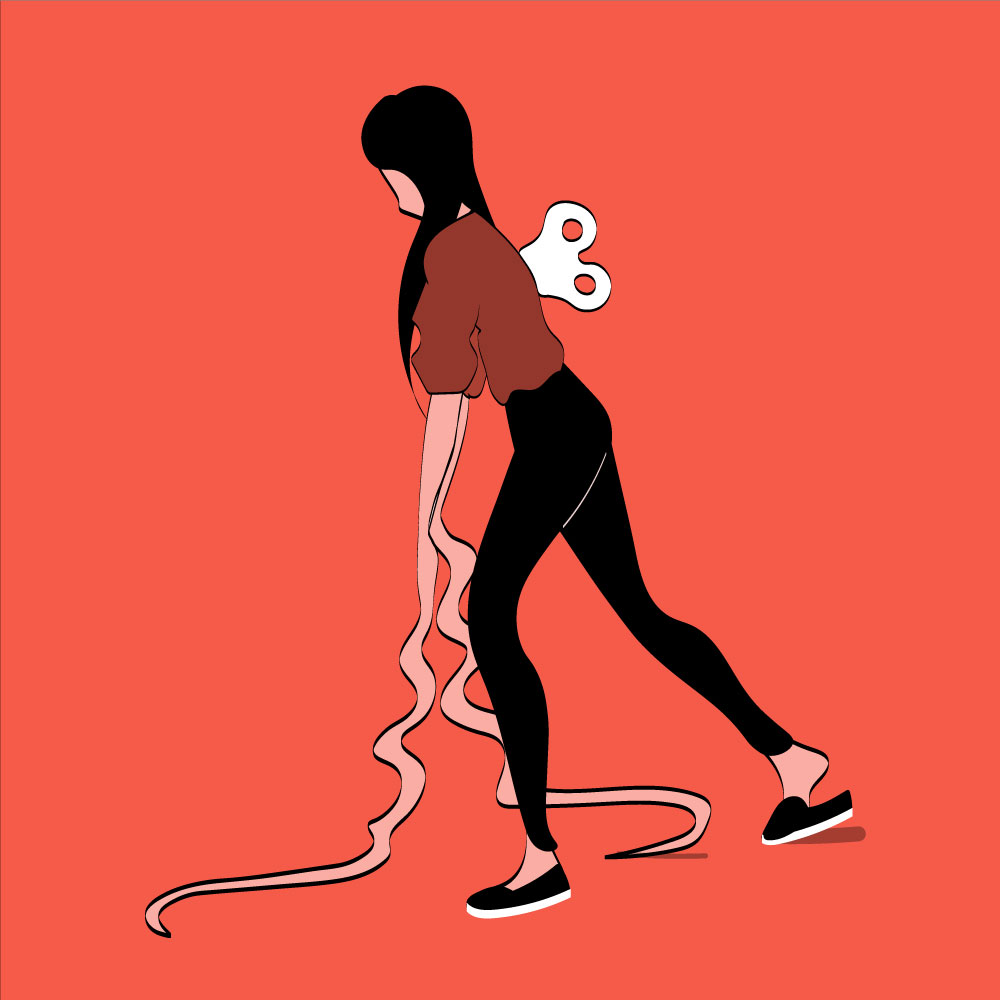
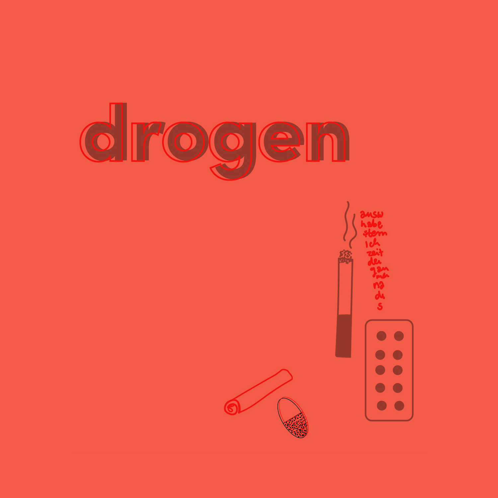

Let's question...
Tabuentstehung
Let's talk about...
Arbeitslosigkeit
Let's think about...
Ehrlichkeit
Let's question..
Altersunterschiede
Let's question..
Individualität

Let's think about...
Selbstliebe
Let's read about...
Psychotherapie
Let's talk about...
Alkoholismus
Let's think about...
Kleptomanie
Let's talk about...
Trauer

Let's think about...
Depressionen
Let's talk about...
Scheitern

Let's talk about...
Einsamkeit

Let's question...
Alltagssexismus
Let's talk about...
MS
Let's question...
Drogen
Let's think about...
Artur
Wie diese entstehen und warum wir oft nicht sagen, was wir denken.
Ausfahrt ins GlückWie der Schritt in die Arbeitslosigkeit dabei helfen kann, sich selbst wieder zu finden.
Hand aufs HerzEin Text über das Lügen und warum wir mehr Platz für Ehrlichkeit schaffen sollten.
Liebe kennt kein AlterDer Umgang der Gesellschaft mit Beziehungen mit großem Altersunterschied.
Ist Individualität überhaupt noch wichtig?Was ist Individualität und gibt es das noch? Oder ist individuell sein Mainstream geworden?
Wenn man auf der Suche nach dem eigenen Glück ist, ist der Kampf viel schwieriger, als er scheint.
Brokkoli vor WackelpuddingTagebucheinträge eines Patienten aus seiner Zeit in einer psychiatrischen Klinik.
Alkoholismus in der FamilieÜber das Leben mit einem alkoholkranken Onkel und einer schweigenden Familie.
KleptomanieEine Krankheit mit rechtlichen Folgen, über welche die Meisten kaum etwas wissen.
Trauern ist nicht immer nur weinenOhne Kontrolle in das Chaos.
DepressionenDas Umgehen mit einer Krankheit wird zum Kampf mit dir selbst.
Die Angst vor dem ScheiternAus der Perspektive eines Bremerhavener Theaterstücks und aus meiner eigenen Sicht.
Einsamkeit im AlterWas man gegen Alterseinsamkeit unternehmen kann.
Warum man nackte Brüste nicht auf Instagram posten kann, wieso das ein Problem ist und wie Künstler sich gegen Sexismus einsetzen.
Der unsichtbare FeindNichts zu sehen und trotzdem krank.
Drogen sind nicht* verboten, weil sie gefährlich sindWarum Gras illegal ist und ob die Gesetze wirklich mit unserer Gesundheit zusammenhängen.
ArturWir nehmen Abschied von unserem tödlich verunglückten Komolitonen.